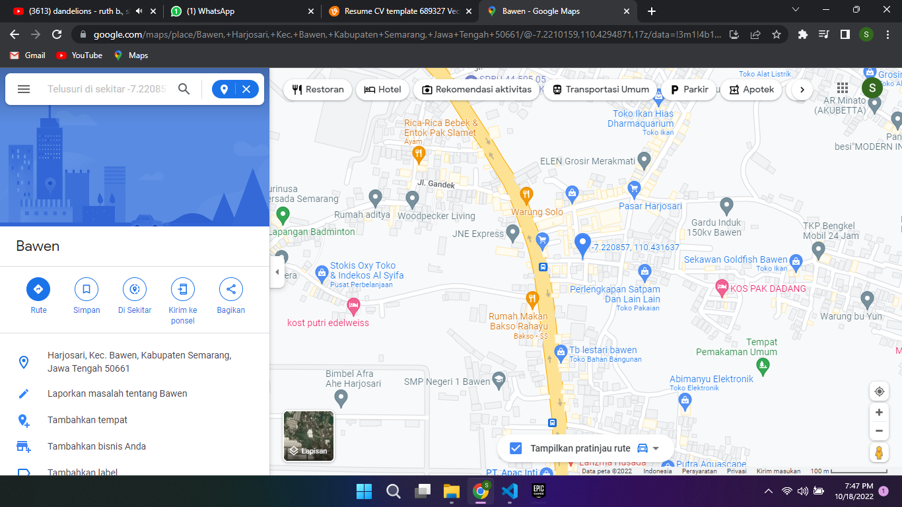

SAYA------------------------------------------------------------------
Sandi Yudha Prayogo, Mahasiswa tahun pertama jurusan Teknologi
Informasi di UDINUS. Selama satu semester ini saya belajar banyak hal tentang css,html,dsb.
ALAMAT-\-------------------------------------------------------------
Harjosari, Kec. Bawen, Kabupaten Semarang, Jawa Tengah 50661

klik disini untuk membuka google maps.